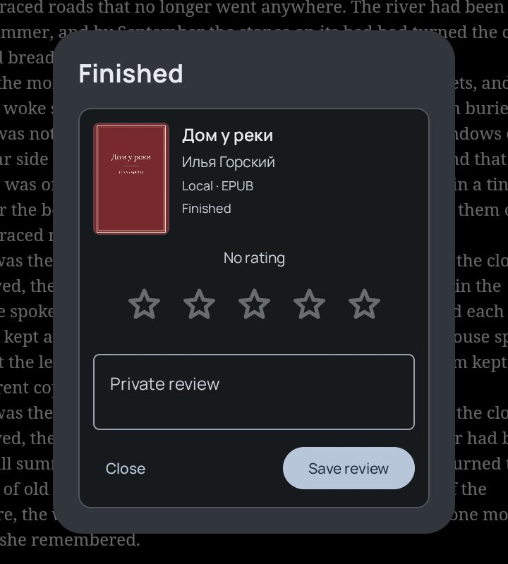
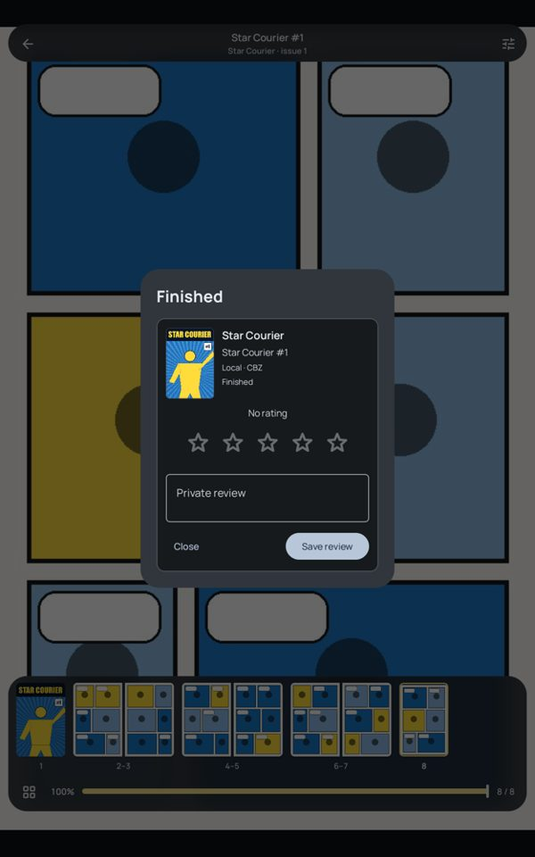

A1 · The Finished screen
reader-core · journalMToday


- It's a card inside a dialog. "Finished" appears twice, once as the title and once on the card. "Local · EPUB" is file information, not something a reader needs at this moment.
- The stars and the dialog's text field and buttons are the old journal card (
JournalItemReviewCard). Nothing else uses that card since 8.9. The stars and Save review use the app's accent, not the cover's. - It shows no numbers, although the journal knows the sessions, days and time for this book. Nothing marks the moment either: no motion and no haptic.
- "Start next" appears only for Kavita lists and server series. Local comics (Star Courier #1 → #2) get no next issue.
- Dragging the slider to the end opens it, so scrubbing counts as finishing. On the last EPUB page the dock says 99% at "p. 73 / 73".
ReaderCompletionDialog.kt, JournalItemReviewCard.kt, host in UnifiedReaderRoute.kt:270, next item in AppReaderCoordinator.kt:450
Proposal
J. R. OKAFORGlass Meridian
FINISHED
Glass Meridian
6 days5 sessions4 h 12 min9th this month
★★★★★Tap to change
Add a private note…
Up next · 2 of 3Star Courier #2
Read next
Back to library
- One surface with no inner card. On tablets it's a 440 dp card at 28 dp corners, tinted by the book's cover colours (8.6). On phones it's a bottom sheet.
- A 92 dp cover, the overline "Finished", the title in sheetTitle (26 Bold) and the author.
- The book's journal numbers as chips: days, sessions, time, and the place in the month ("Read in one sitting" for a single session).
- The journal's star editor at 40 dp in the cover accent. A tap saves, as it does today. The note starts as a one-line pill and opens into the field when tapped.
- When there is a next item, "Read next" is the filled pill and "Back to library" is tonal. Without one, "Back to library" is the only button. The ✕ keeps you on the last page.
- On open, the cover rises 12 dp and the stars come in one after another on
AppMotion.spatial, with one confirm haptic. No confetti. - Maybe: open it when you turn past the last page, not when the slider lands there. Show 100% on the last page.